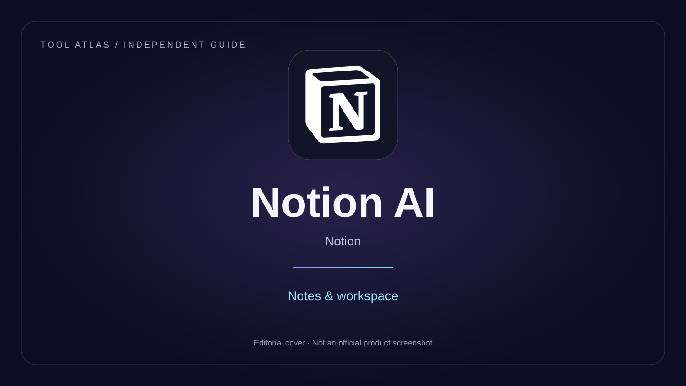

BY NIDULA GALLAGE · UPDATED OCTOBER 3, 2026 · 6 MIN READ

Tool Atlas editorial cover · Product marks belong to their respective owners. No affiliation or endorsement.
THE PRACTICAL TAKEAWAY
Convert notes into structured work without inventing owners or deadlines. Includes a meeting-note example, permission checks and a reliable task-review process.
WorkflowExamplesChecklists
Notion AI
Notion AI works inside a workspace, helping users draft, summarise, rewrite, and retrieve information from supported pages.
Potential advantages: Context can stay close to the project. Things to weigh: Generated summaries may omit details, and workspace permissions should be reviewed before sharing sensitive material.
Try it on a small internal knowledge page and check whether the result preserves important context.
An assistant inside a workspace may reduce copying between tools. That benefit depends on how complete and organised the underlying notes are.
A practical test: Turn notes into a task list
Use the following exercise as a starting point. This is a proposed evaluation, not a test we claim to have completed.
Convert fictional meeting notes into tasks. Include task, owner, due date and the supporting sentence. Leave owner and due date blank if they are not stated. List unresolved questions separately.
How to judge the result
Check that discussion points were not turned into approved decisions. Review workspace permissions and the scope of any connected sources before using real team information.
Run the exercise more than once with a consistent input. Save the original input and output, record corrections, and note the plan and date. Use fictional material until you have reviewed the provider’s data terms. Do not infer reliability from a single successful answer.
Keep a simple evaluation record
Check
What to record
Accuracy
Unsupported claims, omissions and required corrections
Workflow
Import, editing and export steps in your actual environment
Cost
Subscription commitment and usage consumed, including retries
Data
Retention, training settings, deletion and access controls
Before paying
Read the official plan terms, confirm the features available in your account and start with a small pilot. Avoid annual billing until the tool fits a recurring task. A useful trial should show both the work it saves and the checking it still requires.
This page provides editorial guidance. Suggested tests and fictional examples are not claims of measured performance. Verify current features, prices and policies with the provider.
Step by step: Turn meeting notes into a reliable task register
Create fictional notes containing confirmed tasks and discussion points.
Ask for a task table with source sentences, owners and due dates.
Leave unstated fields empty and keep proposed tasks separate.
Check access permissions before applying the workflow to real workspace information.
Copyable exercise brief
Use this with fictional or approved input. Adapt it to the tool’s available interface; it is not a guarantee of supported features or a measured result.
Extract tasks from these notes into task, owner, due date, status and supporting sentence. Leave unstated values blank. Separate agreed actions from suggestions. List contradictions for review rather than choosing a version.
Common mistakes and fixes
Problem
Practical response
Suggestions become assigned tasks
Separate agreed actions and proposals.
Missing notes lead to guesses
Require blanks for fields that are not stated.
Workspace material is shared too broadly
Review permissions and source access before introducing private notes.
Compare the workflow, not just the brand
Compare an assistant embedded in your notes with copying material into another tool. Consider organisation, permissions, export and the quality of the underlying notes.
Who should try this exercise?
Start here if the task above resembles work you repeat and you can check the result against a reliable input. Use a different workflow when you cannot validate the output or cannot share the needed material safely. Test with a small sample before moving client or organisational work.
Frequently asked questions
Do I need a paid plan to start?
Begin with an account and feature set you already have access to. Check the provider’s current terms for the exact exercise. Pay only after identifying a recurring task and confirming that the required capabilities and limits fit it.
Can I publish the first result?
Review accuracy, permissions, names, figures and intended meaning first. For public or client work, inspect the final exported result in the format readers will receive.
How should I record a fair comparison?
Save the input, date, plan, output, corrections and time spent. Run equivalent exercises in each candidate tool and count retries and review effort. Do not compare a polished revision in one product with an unedited first draft in another.
What if the result is inconsistent?
Check whether the input lacks necessary facts or constraints. Revise one part of the brief at a time, keep a record and set a limit on retries. If uncertainty remains, reduce the task scope or use a process you can verify.
Worked example: Convert meeting notes into a task register without inventing assignments
Fictional input: Fictional meeting notes say: “Maya will draft the FAQ by Friday. We discussed refreshing the homepage next month. Budget approval is still pending. The team agreed to review the draft before publication.”
The table below describes the intended checking logic. It is an editorial example, not an output we claim a particular tool produced.
Input or question
Expected handling
Why it matters
Draft FAQ
Assigned to Maya, due Friday
Translate Friday into a date only after confirming the meeting date.
Refresh homepage
Discussion item
Do not assign an owner or deadline.
Publish FAQ
Blocked by review
Separate drafting from approval and publication.
How the complete workflow fits together
Structured notes are useful only when the source is clear. Before extraction, record the meeting date and distinguish speakers from assigned owners. After extraction, check each task against the exact sentence. Missing fields are useful signals; filling them with guesses hides unresolved work.
Prepare the input
Collect approved facts and define the output format. State which details are unknown and which must remain unchanged. Use a fictional sample if the exercise does not require real records. Decide in advance what counts as an unacceptable error so the review is consistent.
Review the first result
Save the first version before changing the brief. Mark factual errors separately from style preferences. Check names, quantities, conditions and source references first. Then assess whether the format is useful in the place where the final result will be used.
Revise deliberately
Describe the specific problem and the requested correction. Avoid asking only for a “better” result, which gives no clear target. Keep correct material where possible and recheck the changed parts as well as any other content that depends on them.
A more careful second pass
A task register should include status, source and a review date. When a decision changes, update the task and preserve enough context to explain why. Check workspace permissions before introducing notes that contain private team or customer information.
What to save for future work
Keep the approved brief, the source facts, the final version and a short record of corrections. Note the account plan and the date of the exercise when relevant. This makes future comparisons easier and helps you notice when the workflow has become less reliable or more expensive.
When to use another process
Use a different process when the source material cannot be shared safely, the required output cannot be verified, or the checking effort outweighs the benefit. For a consequential decision, seek appropriate expertise rather than treating a generated result as a substitute for responsibility.